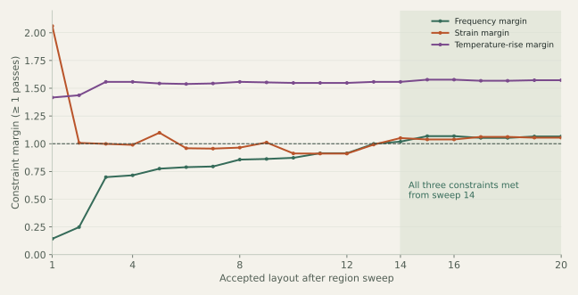

THE SUPPLIED RESEARCH ARTIFACT
Where should a PCB be mounted when its supports also carry away heat?
A recorded search across temperature, assembly strain and vibration constraints. The supplied search replay runs below.
A compatible web presentation of the supplied artifact. The original HTML is available unchanged above. Use the playback and field buttons to inspect recorded results; the browser does not run a new FE solve.
Recorded data & source hash ↗Benchmark, method and transfer to industry
Recorded benchmark: 650 online evaluations across 20 region sweeps for subset 1+2+3+5. Mean online evaluation: 21.8 ms. Preparation: 259.09 s for the bending offline stages and 3.01 s for the thermal/membrane library. The source reports one-core timings; these are specific to this recorded run.
How the method works: build thermal and membrane influence blocks once; build a bending base for each region sweep; reuse small systems at each candidate mount position. The accepted layout passes the stated 1,500 Hz frequency minimum, 1,500 µε monitored-zone strain maximum and 110 °C source-temperature maximum. It is the selected result among the recorded subsets, not a proof of the global optimum.

Application: the same layout-search structure can support thermally conducting mounts in spacecraft electronics, industrial drives, power converters and avionics. The recorded example uses convection on both board faces, 60 °C air, a 70 °C housing and 2.66 W source power. Its final mounts remove 0.836 W. A spacecraft case dominated by screw-tower cooling requires its own contact, radiation and mission thermal boundary conditions.
Web presentation: the supplied script is loaded as an external file so it renders reliably on this host. Its data, calculations, drawing code and playback controls are unchanged. Source and rendering checks ↗
Evidence scope: the contours reproduce the supplied, quantized display fields. Strain acceptance concerns the three monitored zones. The file contains recorded results and algorithm stages; it does not include an independent full-FE error study or experimental validation. Figure provenance ↗